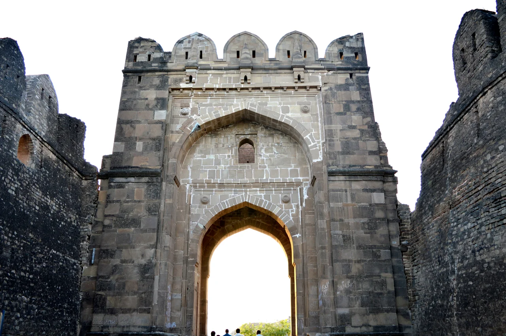

experience
Heritage Tours
Guided encounters with ancient landmarks, living neighbourhoods and the stories that shaped them.
ExploreJourneys through heritage
Discover our heritage experiences, or choose the places that matter to you.
Starting from Lahore
experience
Guided encounters with ancient landmarks, living neighbourhoods and the stories that shaped them.
ExploreHeritage tour
A fixed route through Delhi Gate, Shahi Hammam and Wazir Khan Mosque, connecting an urban threshold, a historic bathhouse and a living sacred landmark.
Explore
Heritage tour
A two-day heritage journey linking Rohtas Fort with Taxila’s archaeological landscape, departing from Lahore.
Explore
Heritage tour
A four-day journey connecting Moenjodaro, Makli and Shah Jahan Mosque, with travel from Lahore.
ExploreDates for your diary
Browse tours, language cohorts, workshops and cultural activities.
Local preview · Dates, prices and availability below are samples. Try a booking without making a real payment.
2 available activities
Official heritage trip · Sample
Rohtas & Taxila weekend: A fixed itinerary with a scheduled departure and a per-person price.
7:00 am
Lahore departure point
Official heritage trip · Sample
Indus Cities & Thatta journey: A fixed itinerary with a scheduled departure and a per-person price.
7:00 am
Lahore departure point
No matching activities. Try another search or activity type.
Your own route
Choose from 606 heritage records, arrange your route and tell us about your group. Site access, travel times and availability will be reviewed before a tour is agreed.
Build your itineraryPricing depends on itinerary, group size, transport, duration and site access. No automatic price is calculated.